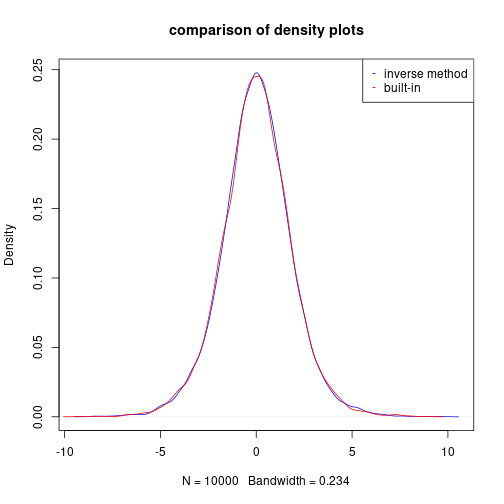
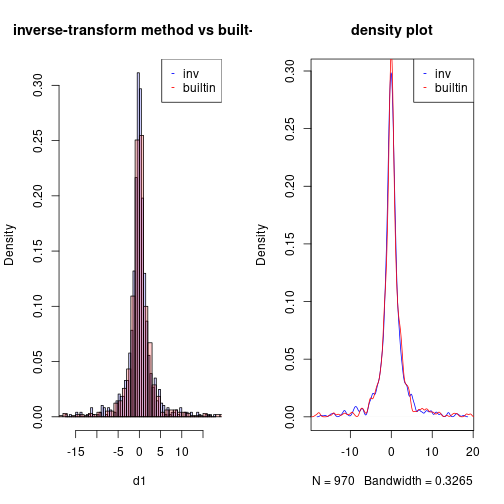
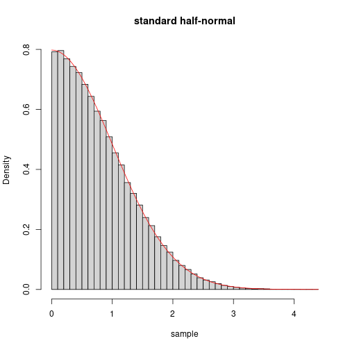
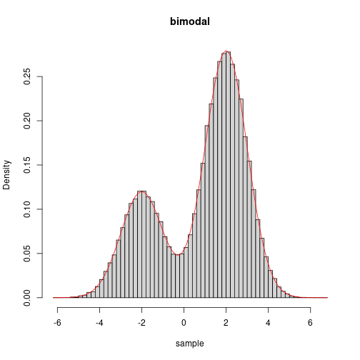

Computational Statistics - SIUe - STAT 575 - Problem Set 1
Alex Towell (lex@metafunctor.com)
Problem 1
Write your own code and find solution to the equation $x^3 + x - 4 = 0$ using Newton’s method and the secant method. Compare the number of iterations needed for different starting values for the two methods.
Solution: Newton’s method
If we have some function $f : \mathbb{R} \mapsto \mathbb{R}$ and we wish to find a root of $f$, i.e., an $x$ such that $f(x) = 0$, we may use Newton’s method.
$$ L(f | x_0) \coloneqq \lambda x.f(x_0) + f'(x_0)(x-x_0). $$$$ L(f|x_0)(x) = 0, $$$$ f(x_0) + f'(x_0)(x-x_0) = 0. $$$$ x = x_0 - \frac{f(x_0)}{f'(x_0)}. $$Hoping that $x$ results in a better approximation of the root of $f$ than $x_0$, we approximate $f$ with $L(f|x)$ and repeat the process.
$$ x_{i+1} = x_i - \frac{f(x_i)}{f'(x_i)}. $$We continue this process until we obtain some stopping condition, e.g., $|x_{i+1} - x_i| < \epsilon$.
$$ x_{i+1} = x_i - \frac{x_i^3+x_i-4}{3x_i^2+1}. $$We implement a general procedure for Newton’s method:
newton_method <- function(f,dfdx,x0,eps,debug=T)
{
n <- 0
repeat
{
x1 <- x0 - f(x0) / dfdx(x0)
n <- n + 1
if (debug) { cat("iteration=",n," x=",x1,"\n") }
if(abs(x1 - x0) < eps) { break } # stopping condition
x0 <- x1
}
list(root=x0,iter=n,eps=eps)
}
We take an initial guess of $x_0 = 1$ and $\epsilon = 1 \times 10^{-6}$ and run the following R code to solve for a root of $f$ using Newton’s method:
f <- function(x) { x^3 + x - 4 }
dfdx <- function(x) { 3*x^2 + 1 }
eps <- 1e-6
x0 <- 1
result <- newton_method(f,dfdx,x0,eps)
## iteration= 1 x= 1.5
## iteration= 2 x= 1.387097
## iteration= 3 x= 1.378839
## iteration= 4 x= 1.378797
## iteration= 5 x= 1.378797
print(result)
## $root
## [1] 1.378797
##
## $iter
## [1] 5
##
## $eps
## [1] 1e-06
We obtain $x \approx 1.3787967$ after $5$ iterations.
Solution: Secant method
$$ \frac{f(x_{i+1}) - f(x_i)}{x_{i+1}-x_i}, $$$$ x_{i+2} = x_{i+1} - f(x_{i+1})\frac{x_{i+1}-x_i}{f(x_{i+1}) - f(x_i)}, $$which requires two initial values $x_0$ and $x_1$.
We define the secant method as a function given by:
secant_method <- function(f,x0,x1,eps,debug=T)
{
n <- 0
repeat
{
x2 <- x1 - f(x1) * (x1 - x0) / (f(x1) - f(x0))
n <- n + 1
if (debug) { cat("iteration=",n," x=",x2,"\n") }
if(abs(x2-x1) < eps) { break } # stopping condition
x0 <- x1
x1 <- x2
}
list(root=x1,iter=n,eps=eps)
}
We let $x_0 = 0$, $x_1 = 1$, and keep everything else the same and run the secant method with the following R code:
x0 <- 0
x1 <- 1
result <- secant_method(f,x0,x1,eps)
## iteration= 1 x= 2
## iteration= 2 x= 1.25
## iteration= 3 x= 1.337931
## iteration= 4 x= 1.382262
## iteration= 5 x= 1.378708
## iteration= 6 x= 1.378797
## iteration= 7 x= 1.378797
print(result)
## $root
## [1] 1.378797
##
## $iter
## [1] 7
##
## $eps
## [1] 1e-06
We obtain $x \approx 1.3787965$ after $7$ iterations. Note that this is $2$ more iterations than Newton’s method.
Comparison of Newton’s method versus secant method
We perform $n=100000$ trials to get a better view of how the two methods, Newton and secant, compare over many different initial guesses.
We generate the data with:
n <- 100000
from <- 0
to <- 4
by <- (to-from)/n
newt_sols <- vector(length=n)
sec_sols <- vector(length=n)
i <- 1
for (x0 in seq(from=from, to=to, by=by))
{
newt_sols[i] <- newton_method(f,dfdx,x0,eps,F)$iter
sec_sols[i] <- secant_method(f,x0,x0+1,eps,F)$iter
i <- i + 1
}
We summarize the results and report them with:
cat("mean iterations\n",
"newton => ", mean(newt_sols), "\n",
"secant => ", mean(sec_sols), "\n")
## mean iterations
## newton => 5.819542
## secant => 7.231338
We see that Newton’s method, on average, requires $1.4117959$ fewer iterations before the stopping condition is satisfied.
Problem 2
Poisson regression. The Ache hunting data set has $n = 47$ observations recording is the number of monkeys killed over a period of days with each hunter along with hunter’s age. It is of interest to estimate and quantify the monkey kill rate as a function of hunter’s age. Hunting prowess confers elevated status among the group, so a natural question is whether hunting ability improves with age, and at which age hunting ability is best.
$$ \mathit{monkeys}_i \sim \operatorname{Pois}\left(\exp(\log \mathit{days}_i + \theta_1 + \theta_2 \mathit{age}_i + \theta_3 \mathit{age}_i^2)\right). $$Feel free to use jacobian and hessian in the numDeriv R package. You may need a sets of crude starting values. I run a linear regression for the “empirical log-rates” and get starting values $(5.99, 0.167, 0.001)$. Feel free to use those. Compare your result with glm() function in R using
glm(monkeys~age+I(age^2), family="poisson", offset=log(days), data=d)
Solution
We are given the following data:
d <- read.table("ache.txt", header=T)
n <- length(d$age)
X <- cbind(rep(1,n), d$age, d$age^2)
loglike <- function(theta)
{
sum(dpois(d$monkeys,exp(log(d$days)+X%*%theta),log=T))
}
# print the data
print(d)
## hunter age monkeys days
## 1 1 67 0 3
## 2 2 66 0 89
## 3 3 63 29 106
## 4 4 60 2 4
## 5 5 61 0 28
## 6 6 59 2 73
## 7 7 58 3 7
## 8 8 57 0 13
## 9 9 56 0 4
## 10 10 56 3 104
## 11 11 55 27 126
## 12 12 54 0 63
## 13 13 51 7 88
## 14 14 50 0 7
## 15 15 48 3 3
## 16 16 49 0 56
## 17 17 47 6 70
## 18 18 42 1 18
## 19 19 39 0 4
## 20 20 40 7 83
## 21 21 40 4 15
## 22 22 39 1 19
## 23 23 37 2 29
## 24 24 35 2 48
## 25 25 35 0 35
## 26 26 33 0 10
## 27 27 33 19 75
## 28 28 32 9 63
## 29 29 32 0 16
## 30 30 31 0 13
## 31 31 30 0 20
## 32 32 30 2 26
## 33 33 28 0 4
## 34 34 27 0 13
## 35 35 25 0 10
## 36 36 22 0 16
## 37 37 22 0 33
## 38 38 21 0 7
## 39 39 20 0 33
## 40 40 18 0 8
## 41 41 17 0 3
## 42 42 17 0 13
## 43 43 17 0 3
## 44 44 56 0 62
## 45 45 62 1 4
## 46 46 59 1 4
## 47 47 20 0 11
where $M_i$ is the random response variable for $i=1,\ldots,n$.
We generalize the univariate Newton’s method in Problem 1 to the multivariate case. We implement the multivariate Newton-Raphson method with numerical hessian and jacobian with the following R code:
library(numDeriv)
newton_raphson_method <- function(x0,f,eps)
{
n <- 0
x1 <- x0
repeat
{
x1 <- x0 - solve(hessian(f,x0))%*%t(jacobian(f,x0))
n <- n + 1
if (n %% 7 == 0) { cat("iteration=",n," theta=",x1,"\n") }
if (max(abs(x1 - x0)) < eps)
{
break
}
x0 <- x1
}
list(root=x1,iter=n)
}
We use the multivariate Newton-Raphson method to find the MLE of $\theta$ in the poisson regression model:
eps <- 1e-6
theta0 <- c(5.99, 0.167, 0.001) # starting values
theta_mle <- newton_raphson_method(theta0,loglike,eps)$root
## iteration= 7 theta= -1.011118 0.1670372 0.000999693
## iteration= 14 theta= -7.590761 0.153262 0.00111206
## iteration= 21 theta= 1.438483 -0.2696712 0.003827084
## iteration= 28 theta= -5.484246 0.1246477 -0.001203418
The MLE of $\theta$ is given by:
theta_mle
## [,1]
## [1,] -5.484245903
## [2,] 0.124647667
## [3,] -0.001203418
We compare the results with the builtin method:
glm(monkeys~age+I(age^2),family="poisson", offset=log(days),data=d)$coefficients
## (Intercept) age I(age^2)
## -5.484245904 0.124647667 -0.001203418
The hand-coded approach and the builtin approach obtain the same point estimate $\hat\theta = (-5.4842, 0.1246, -0.0012)’$.
Problem 3
Logistic and Cauchy distributions are well-suited to the inverse transform method. For each of the following, generate $10,000$ random variables using the inverse transform. Compare your program with the built-in R functions rlogis() and rcauchy(), respectively:
Solution: part (a)
$$ F(x) = \frac{1}{1+e^{-x}} $$$$ \begin{align*} u &= F(x)\\ u &= \frac{1}{1+e^{-x}}\\ x &= \log(u/(1-u)). \end{align*} $$n <- 10000
us <- runif(n)
d1 <- density(log(us/(1-us)))
d2 <- density(rlogis(n))
plot(d1,col="blue",main="comparison of density plots")
lines(d2,col="red")
legend(x="topright",legend=c("inverse method","built-in"),col=c("blue","red"),
pch=c("-","-"))

Solution: part (b)
$$ F(x) = \frac{1}{2} + \frac{1}{\pi} \operatorname{arctan(x)} $$$$ \begin{align*} u &= F(x)\\ u &= \frac{1}{2} + \frac{1}{\pi} \operatorname{arctan(x)}\\ x &= \tan(\pi(u-1/2)). \end{align*} $$n <- 1000
us <- runif(n)
d1 <- tan(pi*(us-0.5))
d2 <- rcauchy(n=n)
d1 <- d1[d1 > -20 & d1 < 20]
d2 <- d2[d2 > -20 & d2 < 20]
c1 <- rgb(0,0,255, max = 255, alpha = 50, names = "blue")
c2 <- rgb(255,0,0, max = 255, alpha = 50, names = "red")
par(mfrow=c(1,2))
hist(d1,col=c1,freq=F,breaks=50,main="inverse-transform method vs built-in")
hist(d2,col=c2,add=T,freq=F,breaks=50)
legend(x="topright",legend=c("inv","builtin"),col=c("blue","red"),pch=c("-","-"))
plot(density(d1), col="blue",main="density plot")
lines(density(d2), col="red")
legend(x="topright",legend=c("inv","builtin"),col=c("blue","red"),pch=c("-","-"))

Problem 4
Generating $10,000$ random variables from $\operatorname{Geometric}(p)$ distribution based off Bernoulli trials.
Solution
A random variable $X \sim \operatorname{Geometric(p)}$ is given by the number of i.i.d. trials needed to have a success where success occurs with probability $p$.
Thus, we may simulate this distribution with the following R code:
# simulate n realizes of geometric(p)
rgeo <- function(n,p)
{
outcomes <- vector(length=n)
for (i in 1:n)
{
trials <- 0
while (T)
{
trials <- trials + 1
if (rbinom(1,1,p) == 1)
{
break
}
}
outcomes[i] <- trials
}
outcomes
}
When we use this function to draw a sample of $n=10000$ geoemtrically distributed random variables with $p=0.2$, we obtain:
p <- .2
n <- 10000
sample <- rgeo(n,p)
cat("the mean should be approximate 1/p =", 1/p, " and we obtain a mean of ", mean(sample))
## the mean should be approximate 1/p = 5 and we obtain a mean of 4.9587
Problem 5
$$ f(x) = \frac{2}{\sqrt{2 \pi}} e^{-x^2/2} , x > 0. $$For the candidate pdf, choose the exponential density with rate $1$. Verify that your method works via a plot of the true density, and a histogram of the generated values.
Solution
$$ \operatorname{dhalfnormal}(x) = \frac{2}{\sqrt{2 \pi}} e^{-x^2/2}, x > 0. $$We model this density with the following R code:
# density for standard half-normal
dhalfnormal <- function(x) { 2/sqrt(2*pi)*exp(-x^2/2) }
which is found to be approximately $c = 1.315489247$.
We implement the standard half-normal sampler, $\operatorname{rhalfnormal}$, using the acceptance-rejection sampling technique with the following R code:
# accept-rejection sampling for standard half-normal
# using exp(rate=1)
rhalfnormal <- function(N)
{
c <- 1.315489247
xs <- vector(length=N)
k <- 1
while (T)
{
x <- rexp(n=1)
if (runif(n=1) < dhalfnormal(x)/(c*dexp(x)))
{
xs[k] <- x
k <- k + 1
if (k == N)
{
break
}
}
}
xs
}
We simulate drawing $n=100000$ samples from the standard half-normal distribution and plotting a histogram of the sample with its density overload in red on top of it with the following R code:
n <- 100000
sample <- rhalfnormal(n)
hist(sample,freq=F,breaks=50,main="standard half-normal")
curve(dhalfnormal(x),add=TRUE,col="red")

We see that the histogram is compatible with being drawn from the overload density.
Problem 6
$$ f(x) \propto 3 e^{-0.5(x+2)^2} + 7 e^{-0.5(x-2)^2} $$The normalizing constant is $25.066$. For your proposal $g(·)$, use a $N(0, 2^2)$ distribution. Verify that your method works via a plot of the true normalized density, and a histogram of the generated values.
Solution
$$ \operatorname{ker-bimodal}(x) = 3 e^{-0.5(x+2)^2} + 7 e^{-0.5(x-2)^2}, $$$$ \operatorname{dbimodal}(x) = \frac{\operatorname{ker}(x)}{C}. $$We model these two functions with the following R code:
# density for biomodal density
kerbimodal <- function(x) { 3*exp(-0.5*(x+2)^2) + 7*exp(-0.5*(x-2)^2) }
kerbimodal.C <- 25.0663
dbimodal <- function(x) { kerbimodal(x) / kerbimodal.C }
which is found to be approximately $c = 68.35212$.
We implement the bimodal sampler, $\operatorname{rbimodal}$, using the acceptance-rejection sampling technique with the following R code:
# accept-rejection sampling for bimodal distribution with density dbimodal
# using normal(0,2^2).
rbimodal <- function(N)
{
c <- 68.35212
xs <- vector(length=N)
k <- 1
while (T)
{
x <- rnorm(n=1,mean=0,sd=2)
if (runif(n=1) < kerbimodal(x)/(c*dnorm(x,mean=0,sd=2)))
{
xs[k] <- x
if (k == N)
{
break
}
k <- k + 1
}
}
xs
}
We simulate drawing $n=100000$ samples from the bimodal distribution and plotting a histogram of the sample with its density overload in red on top of it with the following R code:
n <- 100000
sample <- rbimodal(n)
hist(sample,freq=F,breaks=50,main="bimodal")
curve(dbimodal(x),add=TRUE,col="red")

We see that the histogram is compatible with being drawn from the overload density.